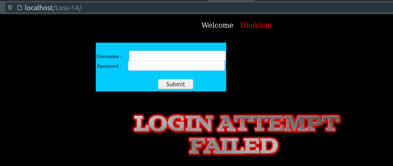
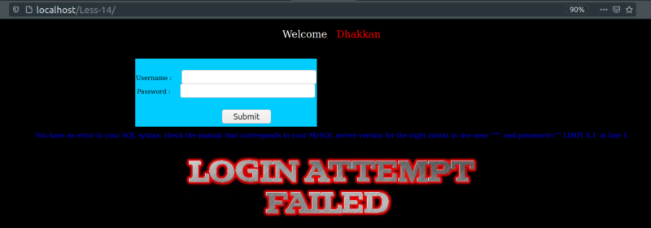
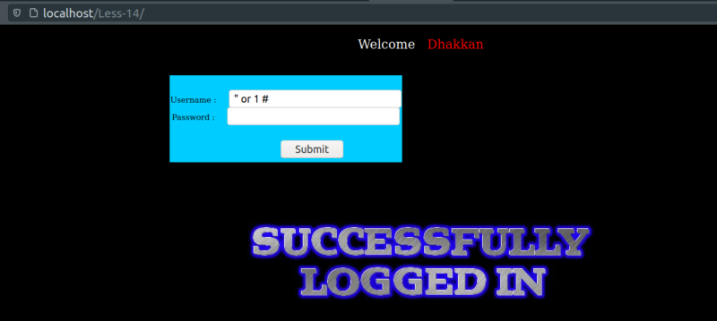

Double Query Injection
We're going to work on lesson 14.
a) Input a large number or a single quote as a username and password.

Result: It does not work. It still gives us a “Login Attempt Failed” message.
b) Try “double quotes” in the username.

Result: You have an error in your SQL syntax; check the manual that corresponds to your MySQL server version for the right syntax to use near '""" and password="" LIMIT 0,1' at line 1
So what we can infer from this error message is that there is:
‘ “/” and password=” ” LIMIT 0,1 ‘ at line 1
c) Use " or 1 # to bypass the login.

Result: We have success. The reason is that the 1 used after OR resolves to true and as a result we have successful query. The password is not matched since we commented out the rest of the query.
d) Using another functions.
We've already see the following other queries on “SQL Shell 2” section that can be used here..